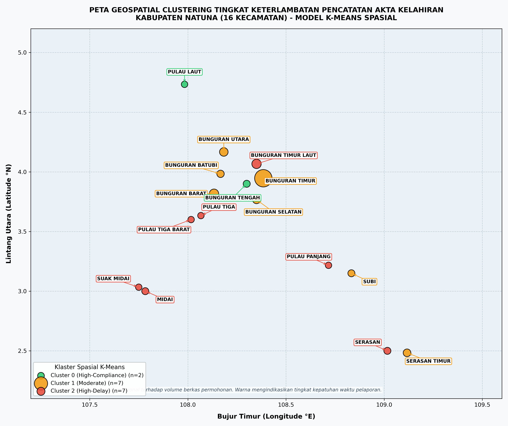
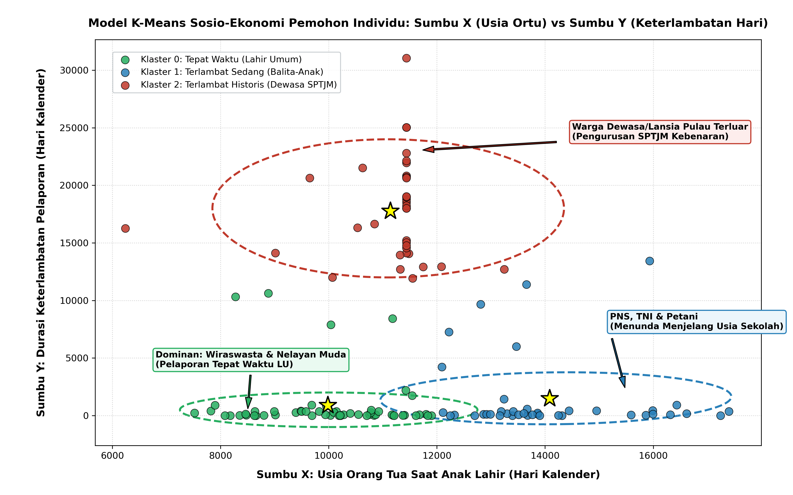

Analisis Multidimensi Tingkat Keterlambatan Pencatatan Akta Kelahiran pada Dinas Kependudukan dan Pencatatan Sipil Kabupaten Natuna (Tahun Pelayanan 2025)
Total Berkas Pelayanan 2025
2 Kecamatan (B. Tengah, P. Laut)
7 Kecamatan (B. Timur, Barat, dll)
7 Kecamatan (Midai, Serasan, dll)
Peta Geospatial Resolusi Tinggi 300 DPI (Sesuai Naskah Laporan Akhir FinPD):

Grafik Klaster Sosio-Ekonomi Individu 300 DPI (Sumbu X vs Sumbu Y):

Profil Demografi Orang Tua:
Rata-rata Usia Ortu: 27.3 Tahun (9.983 Hari)
Rentang Usia: 20.6 s.d. 32.6 Tahun (Usia biologis produktif awal).
Karakteristik Keterlambatan:
Median Keterlambatan: 82 Hari (~0.2 Tahun / Rata-rata 2.4 Tahun). Memuat seluruh kelahiran baru tepat waktu (≤60 hari).
Sosio-Ekonomi & Profesi Dominan:
Didominasi wiraswasta muda, nelayan modern pulau utama, dan pedagang. Kesadaran administrasi tinggi sejak persalinan di faskes (RSUD / Polindes).
Instrumen Yuridis & Bukti:
Mayoritas melampirkan Surat Keterangan Lahir (SKL) Medis dokter/bidan resmi tanpa memerlukan surat pernyataan SPTJM.
Rekomendasi Kebijakan:
Dipertahankan melalui pelayanan loket reguler dan integrasi pelaporan faskes rumah sakit/puskesmas.
Profil Demografi Orang Tua:
Rata-rata Usia Ortu: 38.6 Tahun (14.082 Hari)
Rentang Usia: 33.1 s.d. 47.6 Tahun (Keluarga matang/dewasa).
Karakteristik Keterlambatan:
Median Keterlambatan: 148 Hari (~0.4 Tahun / Rata-rata 4.1 Tahun). Keterlambatan anak usia prasekolah menjelang jenjang PAUD/SD.
Sosio-Ekonomi & Profesi Dominan:
Didominasi pegawai negeri (PNS), honorer daerah, prajurit TNI/Polri, dan petani kebun. Mengurus akta secara reaktif ketika anak dipersyaratkan masuk sekolah.
Instrumen Yuridis & Bukti:
Kombinasi SKL faskes dan surat keterangan desa dengan kelengkapan buku nikah resmi orang tua.
Rekomendasi Kebijakan:
Kerja sama lintas instansi dengan Dinas Pendidikan untuk integrasi pendaftaran PPDB berbasis akta lahir otomatis.
Profil Demografi Orang Tua:
Usia Ortu Saat Anak Lahir: 30.5 Tahun (11.140 Hari)
Usia Pemohon Saat Mengurus: 32 s.d. 85 Tahun (Warga Dewasa s.d. Lansia).
Karakteristik Keterlambatan:
Median Keterlambatan: 17.991 Hari (~49.3 Tahun), Rata-rata 17.775 Hari (~48.7 Tahun). Rekor tertinggi mencapai 31.057 hari (~85 tahun).
Sosio-Ekonomi & Profesi Dominan:
Penduduk asli pulau-pulau 3T (Midai, Suak Midai, Serasan, Subi, Pulau Tiga) berprofesi nelayan tradisional dan buruh lepas. Terkendala biaya transportasi kapal ke Ranai selama puluhan tahun.
Instrumen Yuridis & Bukti:
100% menggunakan Surat Pernyataan Tanggung Jawab Mutlak (SPTJM Kebenaran Kelahiran) karena penolong lahir masa lampau (dukun beranak) telah wafat.
Rekomendasi Kebijakan:
Intervensi darurat melalui Kapal Pelayanan Keliling (Mobile Service Boat) dan Sidang Terpadu Isbat/SPTJM Massal tingkat desa.
| Kecamatan | Klaster Spasial | Total Berkas | Rasio Lahir Umum (LU) | Median Keterlambatan | Rekomendasi Kebijakan Disdukcapil |
|---|---|---|---|---|---|
| BUNGURAN TIMUR | Cluster 1 (Moderate) | 70 berkas | 35.7% | 148 hari (0.4 thn) | Penguatan Sosialisasi Desa & Integrasi Puskesmas Pembantu (Pustu) |
| BUNGURAN BARAT | Cluster 1 (Moderate) | 11 berkas | 27.3% | 568 hari (1.6 thn) | Penguatan Sosialisasi Desa & Integrasi Puskesmas Pembantu (Pustu) |
| BUNGURAN SELATAN | Cluster 1 (Moderate) | 6 berkas | 33.3% | 636 hari (1.7 thn) | Penguatan Sosialisasi Desa & Integrasi Puskesmas Pembantu (Pustu) |
| BUNGURAN UTARA | Cluster 1 (Moderate) | 8 berkas | 0.0% | 447 hari (1.2 thn) | Penguatan Sosialisasi Desa & Integrasi Puskesmas Pembantu (Pustu) |
| BUNGURAN TENGAH | Cluster 0 (High-Compliance) | 3 berkas | 66.7% | 36 hari (0.1 thn) | Layanan Loket Reguler & Percontohan Desa Tertib Adminduk |
| BUNGURAN BATUBI | Cluster 1 (Moderate) | 4 berkas | 0.0% | 292 hari (0.8 thn) | Penguatan Sosialisasi Desa & Integrasi Puskesmas Pembantu (Pustu) |
| BUNGURAN TIMUR LAUT | Cluster 2 (High-Delay) | 11 berkas | 9.1% | 14768 hari (40.4 thn) | Prioritas Armada Mobile Service Boat & Pelayanan Sidang Terpadu SPTJM |
| PULAU LAUT | Cluster 0 (High-Compliance) | 1 berkas | 100.0% | 1 hari (0.0 thn) | Layanan Loket Reguler & Percontohan Desa Tertib Adminduk |
| PULAU TIGA | Cluster 2 (High-Delay) | 1 berkas | 0.0% | 14120 hari (38.7 thn) | Prioritas Armada Mobile Service Boat & Pelayanan Sidang Terpadu SPTJM |
| PULAU TIGA BARAT | Cluster 2 (High-Delay) | 0 berkas (Pemekaran P. Tiga) | 0.0% | 12000 hari (32.9 thn) | Prioritas Armada Mobile Service Boat & Pelayanan Sidang Terpadu SPTJM |
| MIDAI | Cluster 2 (High-Delay) | 3 berkas | 0.0% | 16635 hari (45.5 thn) | Prioritas Armada Mobile Service Boat & Pelayanan Sidang Terpadu SPTJM |
| SUAK MIDAI | Cluster 2 (High-Delay) | 1 berkas | 0.0% | 11993 hari (32.8 thn) | Prioritas Armada Mobile Service Boat & Pelayanan Sidang Terpadu SPTJM |
| SERASAN | Cluster 2 (High-Delay) | 3 berkas | 0.0% | 7888 hari (21.6 thn) | Prioritas Armada Mobile Service Boat & Pelayanan Sidang Terpadu SPTJM |
| SERASAN TIMUR | Cluster 1 (Moderate) | 5 berkas | 0.0% | 367 hari (1.0 thn) | Penguatan Sosialisasi Desa & Integrasi Puskesmas Pembantu (Pustu) |
| SUBI | Cluster 1 (Moderate) | 3 berkas | 0.0% | 920 hari (2.5 thn) | Penguatan Sosialisasi Desa & Integrasi Puskesmas Pembantu (Pustu) |
| PULAU PANJANG | Cluster 2 (High-Delay) | 1 berkas | 0.0% | 10324 hari (28.3 thn) | Prioritas Armada Mobile Service Boat & Pelayanan Sidang Terpadu SPTJM |
| Model Data Mining | Entitas Data (N) | Fitur Masukan | Nilai K | Silhouette Score | Davies-Bouldin Index | Status Kelayakan |
|---|---|---|---|---|---|---|
| Model 1 (Spasial Wilayah 16 Kecamatan) | 16 Kecamatan | Persentase LU, Median Durasi Hari | K = 3 | 0.6377 | 0.4710 | Sangat Baik (Dense & Well-Separated) |
| Model 2 (Sosio-Ekonomi Pemohon Individu) | 131 Berkas | Hari Usia Ortu (X), Durasi Keterlambatan (Y) | K = 3 | 0.5524 | 0.5924 | Valid & Optimal (Dense & Well-Separated) |